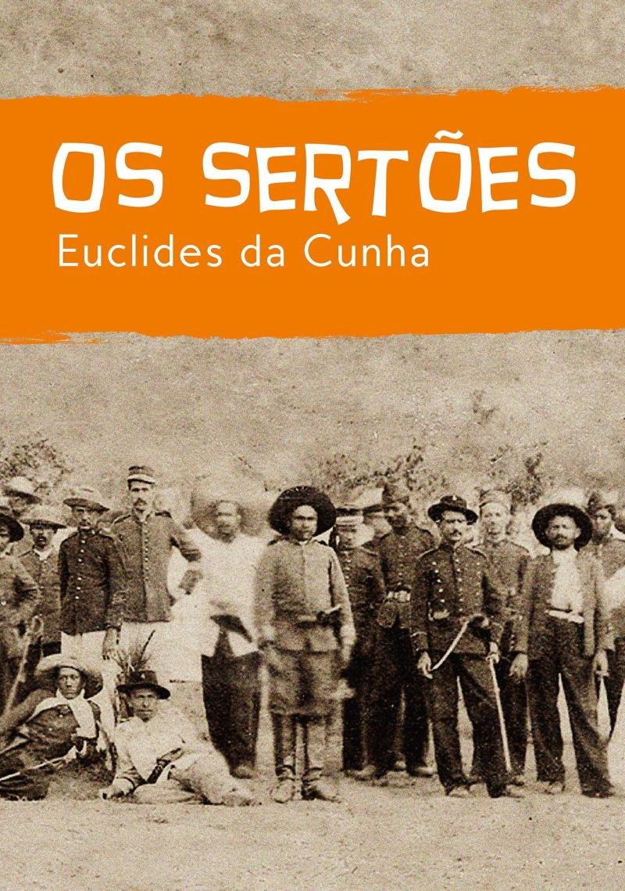

O nordeste Brasileiro mostrado em uma obra literária
Na obra´´ Os sertões´´ do escritor Euclides da Cunha, apresenta o passado do povo nordestino, durante a Guerra de Canudos.
O bioma da caatinga, está localizado no Nordeste brasileiro, onde no passado ocorreu a guerra de canudos , é com isso o escritor Euclides da Cunha escreveu a obra ´´ Os Sertões´´. Com o intuito , de demonstrar o quando o povo do sertão sofreu na época de 1866 e 1867, trata- se de um relato histórico mesclando literatura , geografia e também história.
No sertão brasileiro, naquela época teve a guerra, a seca e o sofrimento do povo, mostrando na obra como: A terra ( descrição da terra), O homem (da vida e costumes do sertão) e A luta (descrição da guerra de canudos). Assim essa é uma das obras mais importantes para o Brasil por mostrar o clima, a vegetação e também o sofrimento. Logo, mostra que muitas coisas mudaram no Nordeste como também muitas continuaram iguais.
A importância da obra Os Sertões : ´´ É importante pois relata fatos da literatura de cordel que é parte da própria literatura ,é a cultura do sertão, por isso que ele é importante na literatura brasileira.´´
A guerra de canudos e Os Sertões :
Aluno(a): Camilla Campos